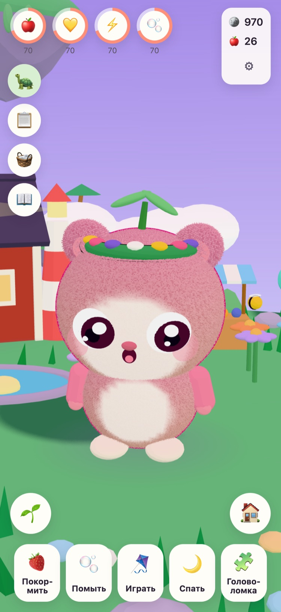
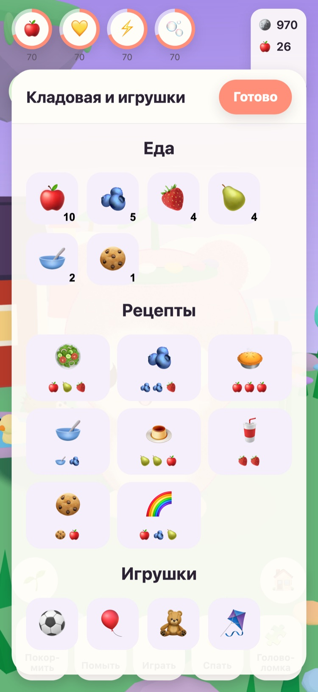
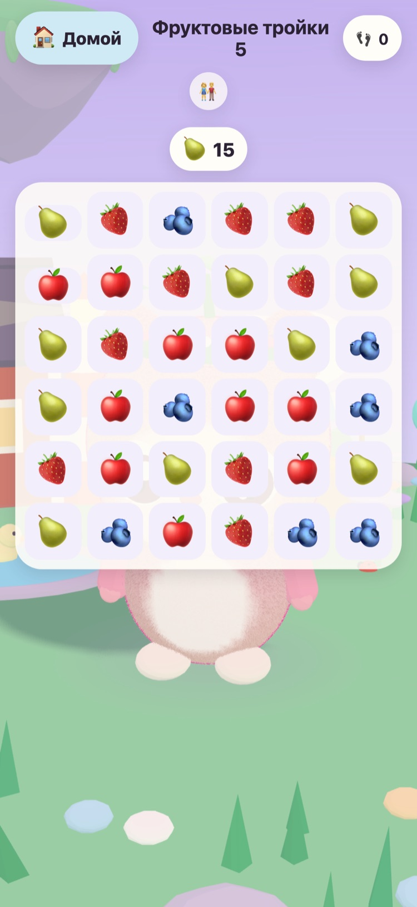
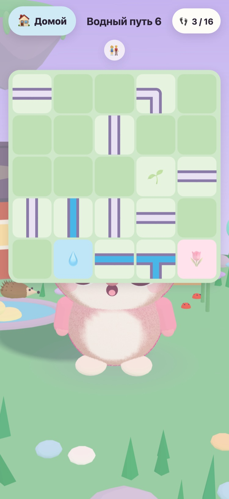
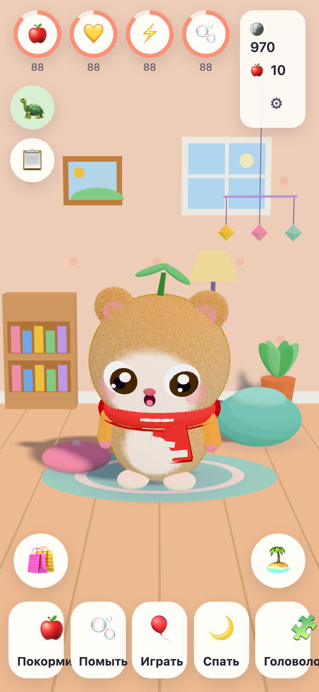
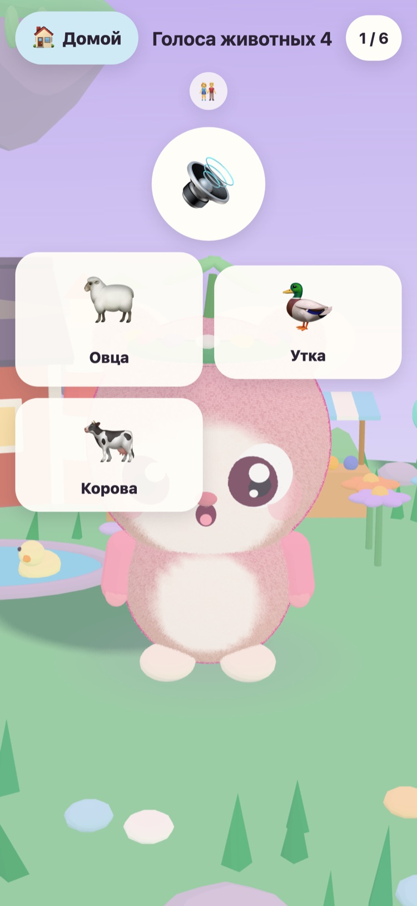

JUNOLittle Worlds
Ребёнок выводит Juno из яйца, заботится о нём и решает добрые головоломки, которые пробуждают парящий остров. Спокойная игра для детей от 6 до 10 лет на iPhone и iPad.
Привет! Я нашёл три тёплых яйца. Какое из них твоё?
- Без рекламы
- Без отслеживания
- Без учётной записи
- Без таймеров и давления






Свой маленький друг
Дедушка Tintin — старая черепаха, которая присматривает за Луговым островом. Он нашёл три тёплых яйца. Ваш ребёнок выбирает одно и даёт имя тому, кто вылупится. С этого момента Juno принадлежит ему: его можно кормить, мыть, играть с ним и укладывать спать.
-
Выбрать яйцо
Три тёплых яйца, три цвета. Ребёнок выбирает одно и смотрит, как из него кто-то вылупляется.
-
Дать имя и полюбить
Кормить, мыть, играть и спать. Juno показывает, как он себя чувствует, и растёт по мере того, как крепнет их дружба.
-
Разбудить остров
Каждая звезда за головоломку возвращает свет на Луговой остров, пока туда снова не вернутся цветы, пчёлы и утки.
Кормить, мыть, играть, спать
Разная еда и игрушки, пузыри в ванне и Juno, который показывает, как он себя чувствует. Потребности снижаются медленно и никогда не доходят до нуля, поэтому Juno никогда не пропадёт.
57 добрых головоломок
«Фруктовые тройки», «Сад памяти», а также «Голоса животных» и «Звуки транспорта» с настоящими записями. Звёзды даются за ходы, а не за время, и попробовать снова всегда бесплатно.
Остров, который просыпается
Цветочный сад распускается и встречает пчёл, Утиный пруд наполняется водой и утками, а на грядках из семян вырастают яблоки и клубника.
Комната, где можно навести уют
За монеты из головоломок и ежедневных заданий можно купить украшения для комнаты Juno и наряды. В магазине за монеты ничего не стоит настоящих денег.
Чтение вслух
Дедушка Tintin читает вслух каждую строчку своим тёплым голосом — для детей, которые ещё не умеют читать. Нажмите на него, чтобы послушать ещё раз.
Раздел «Для родителей»
За родительской проверкой: язык, чтение вслух, звуки, время сна и мягкое напоминание о перерыве. Во время сна Juno спит, а головоломки ждут до утра.
Говорит на 21 языке
Дедушка Tintin говорит с ребёнком на его родном языке. Выберите язык в разделе «Для родителей» или позвольте игре следовать языку устройства.
English Svenska Dansk Norsk Suomi Deutsch Nederlands Français Español Italiano Português (Brasil) Polski Русский Ελληνικά Türkçe Bahasa Melayu Kiswahili हिन्दी 日本語 한국어 简体中文
Сделано дедушкой
JUNO создал в Швеции дедушка для своей внучки — такую игру, за которой ему было бы радостно её видеть. Дедушка Tintin, черепаха из игры, — это он сам.
Поэтому правила простые. Ничего, что давит, ничего, что обманывает, и ничего, что собирает какие-либо сведения о вашем ребёнке.
Бесплатно и без рекламы
JUNO можно скачать бесплатно, и в нём нет рекламы, отслеживания и учётной записи. Всё, что делает ваш ребёнок, остаётся на вашем устройстве. Подробнее на странице о конфиденциальности.
Взрослый может купить JUNO Plus или «Зимний набор» в разделе «Для родителей», за родительской проверкой. Обе покупки разовые: их можно восстановить и разделить с семьёй.